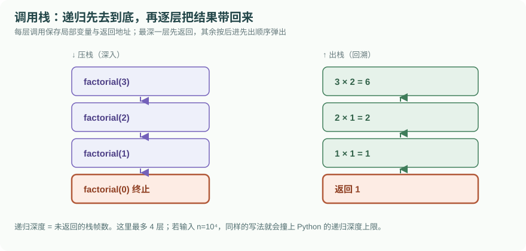
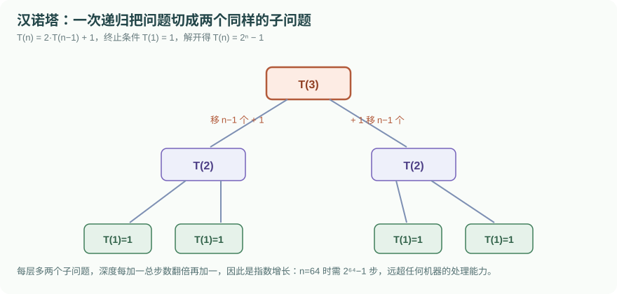
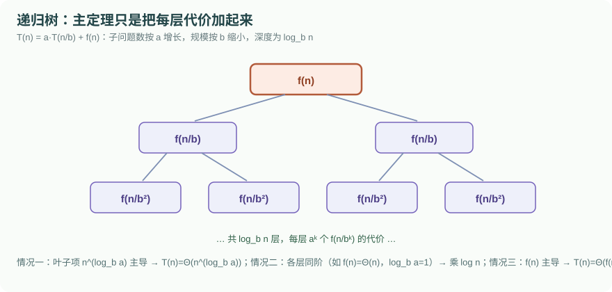

递归与分治：把大问题交给自己
递归不是“自己调用自己”的奇技，而是一种约定：只要终止条件正确、递推关系正确，就不必跟踪每一步。分治则是递归最有威力的用法——把问题切成同结构的小块，分别解决再合并。
递归的信念：相信小号问题
回到第 8 章写过的二叉树遍历：遍历一棵树时，我们先把问题化为“遍历左子树”和“遍历右子树”，而子树的结构和整棵树完全一样。这种把问题缩小成一个同结构的小问题的结构，就是递归。阶乘也一样：n! = n × (n−1)!，右边又出现了一个阶乘。
初学递归最常见的错误，是想在脑子里逐层模拟每一次调用。正确的心智模型是：假设子调用已经能正确解决它那个更小的问题，你只需负责把这一层“接”好。这听上去像循环论证，但它的合法性来自数学归纳法——终止条件成立，且“小的对⇒大的对”，那所有规模都成立。
所以写递归时先不要追问“到底怎么算出来的”，而是回答三个问题：什么时候停？怎么把规模变小？小的结果怎么变成大的结果？下一节就把这三件事名字化。
递归三要素
一个正确的递归函数必须同时具备三件事，缺一不可：
- 终止条件（base case）：最简单、能直接回答的情形，不再递归。
- 递推关系：把规模 n 的问题化成规模更小的同类问题。
- 返回值：把子问题的结果组合成本层的结果，逐层传回去。
用“电影院座位号”打比方：你坐第 15 排，想问自己是第几排，但看不清编号，于是问前排；前排也不知道，再往前问……一直到第 1 排，它直接回答“第 1 排”（终止条件）。然后信息往回传：第 2 排知道自己是 2，第 3 排知道自己 3……最后你也知道自己是 15。这里的“前排排号 + 1”就是递推关系，“往前传”就是返回值。
def factorial(n):
if n < 0:
raise ValueError("n 必须非负")
if n == 0: # 终止条件
return 1
return n * factorial(n - 1) # 递推关系 + 返回值把终止条件写错、或递推关系不能真正缩小规模（比如写成 f(n) 而不减 1），递归就会无限制下降直到栈溢出。这两处就是“无限递归”的根源。
调用栈：递归怎样回来
递归之所以能“回来”，靠的是调用栈。每进入一层调用，系统就压入一个栈帧，保存这一层的参数、局部变量和“返回后从哪继续”；到达终止条件后，栈帧按后进先出的顺序逐个弹出，把结果交给上一层。

汉诺塔把递归的分解展现得最清楚。把 n 个盘从源柱移到目标柱，只需三步：先把上面 n−1 个盘借助目标柱移到辅助柱，再把最大的盘直接移到目标柱，最后把那 n−1 个盘从辅助柱移到目标柱。后两步本身就是同样的子问题。

def hanoi(n, source, target, auxiliary):
if n == 1:
return [(source, target)]
return (hanoi(n - 1, source, auxiliary, target)
+ [(source, target)]
+ hanoi(n - 1, auxiliary, target, source))注意递归版本没用到任何循环，也没显式维护“现在到哪一步”。它只描述了三要素，而移动顺序由调用栈自动保证正确。
二分查找与边界变体
二分查找是分治的最小例子：在有序数组上，每次看中间元素，把搜索区间丢弃一半。终止条件就是“区间为空”。写成递归很自然，但工程里几乎都用迭代，因为迭代没有函数调用开销，也不会因区间太长而爆栈。
def first_at_least(a, target):
# 返回第一个 ≥ target 的下标；不存在则返回 len(a)
lo, hi = 0, len(a) # 半开区间 [lo, hi)
while lo < hi:
mid = lo + (hi - lo) // 2
if a[mid] < target:
lo = mid + 1
else:
hi = mid # a[mid] 可能是答案，保留在区间里
return lo把“小于就放弃左边”改成“找到也不停，继续往左收缩”，就能求出第一个等于 target 的位置；它同时也是 target 的插入位置（第一个 ≥ target 的下标）。这正是标准库里 lower_bound / bisect_left 的语义。变体之间只差“命中后往哪边收”。
逐步观察二分区间收缩
固定有序数组 [1, 3, 3, 5, 7, 9]；选择目标值，查看每一步的搜索区间。
一个经典易错点是 mid = (lo + hi) // 2 在有符号整数上可能溢出（在 C/Java 里）；写成 lo + (hi - lo) // 2 就安全。另一个是边界开闭不一致——建议统一用半开区间 [lo, hi)，循环条件永远是 lo < hi。
分治三步与归并排序
分治是递归最有威力的用法，它把“缩小问题”说得更具体，固定为三步：分（把问题拆成若干个更小、结构相同的子问题）、治（递归解决每个子问题，小到可以直接回答就返回）、合（把子问题的解合并成原问题的解）。分治能不能快，关键在于“合”这一步能不能比“直接做”更便宜。
归并排序就是标准样板：分是把数组从中间切成两半；治是对两半递归排序；合是把两个有序段线性合并（第 14 章图 1）。关键就在于合并两个有序段只需 O(n) 一次扫描，而“直接排序”做不到这么快。递归树共有 log₂ n 层、每层合并总量为 n，所以总代价 O(n log n)。
快排也是分治，但把“分”和“合”的位置对调：它先花 O(n) 分区（分），再递归两段（治），而“合”什么都不用做——因为分区后左右段拼起来就是有序的。这提醒我们：分治三步里哪一步花时间，决定了算法的架子。
主定理：估算递归复杂度
分治算法的代价天然是一个递归式，子问题数按 a 增长、规模按 b 缩小，再加上每层的分解或合并代价 f(n)：

主定理不做新数学，它只是把递归树每层代价求和后的结论。判断方法就是比较 n^(log_b a) 与 f(n)：
| 情况 | 条件 | T(n) | 例子 |
|---|---|---|---|
| 叶子项主导 | f(n) 比 n^(log_b a) 小得多 | Θ(n^(log_b a)) | 二分查找 T(n)=T(n/2)+O(1) → Θ(log n) |
| 各层同阶 | f(n) = Θ(n^(log_b a)) | Θ(n^(log_b a)·log n) | 归并排序 2T(n/2)+O(n) → Θ(n log n) |
| 根项主导 | f(n) 比 n^(log_b a) 大得多 | Θ(f(n)) | 不平衡划分 T(n)=T(n−1)+O(n) → Θ(n²) |
以归并排序验证：a=2、b=2，所以 n^(log_b a) = n；而 f(n)=O(n) 与之同阶，落在第二种，得 Θ(n log n)。注意主定理有使用前提（f(n) 需满足正则条件），也不适用于 T(n)=T(n−1)+O(n) 这类非折半情形——那是另一种展开方式。
陷阱：栈溢出、重复计算、尾递归
栈溢出
栈帧要占用内存，而调用栈深度是有限的。Python 默认递归深度上限为 1000；超过就会招出 RecursionError。关键在于：递归深度是否可控。处理一棵深度未知的树时，递归写法可能在生产数据上爆栈——此时应改用显式栈或队列迭代。
import sys
sys.getrecursionlimit() # 默认 1000
# 深度不可控时，用列表当栈自己维护，而不是递归重复计算
朴素斐波那契 F(n)=F(n−1)+F(n−2) 直接递归时，同一个子问题会被反复求解：算 F(5) 要算 F(4) 和 F(3)，而 F(4) 又要算 F(3) 和 F(2)——F(3) 被算了不止一次。展开后调用数呈指数增长，约 1.618ⁿ，n=50 就慢到不可接受。
数一数朴素递归调用了多少次
拖动滑块选择 n，对比朴素递归与记忆化对同一子问题的处理。
解决办法是记忆化：把算过的结果存起来，下次直接查表。这样每个子问题只算一次，复杂度从指数降到 O(n)。把“自顶向下的记忆化递归”反过来写成“自底向上的递推表格”，就是下一章的动态规划。
尾递归
如果递归调用是函数的最后一步（返回后不再做别的运算），部分语言会复用当前栈帧，避免栈增长——这叫尾递归优化。但 Python 不做尾递归优化，写尾递归不会省下任何栈空间。所以别把工程上的防爆栈希望寄托在它上面，跨语言时也别默认它存在。
带走三个判断准则
- 写递归先写终止条件和递推关系，再“相信”子调用正确——这正是数学归纳法的编程版本。
- 递归的代价是栈深度：深度可控就用递归换简洁，深度不可控就改用显式栈迭代。
- 子问题一旦重叠，朴素递归会指数级重复计算；记忆化或改写成递推，就是下一章动态规划的入口。
继续学习与校验资料
- Divide-and-conquer algorithm — 分治范式的定义与典型例子
- Master theorem — 递归式复杂度三种情况的完整表述
- Python
sys.setrecursionlimit— 递归深度上限的官方说明 - 上一章：排序算法全览 — 归并排序是本章分治的直接案例
- 运行参考：
examples/recursion.py；测试：tests/test_recursion.py